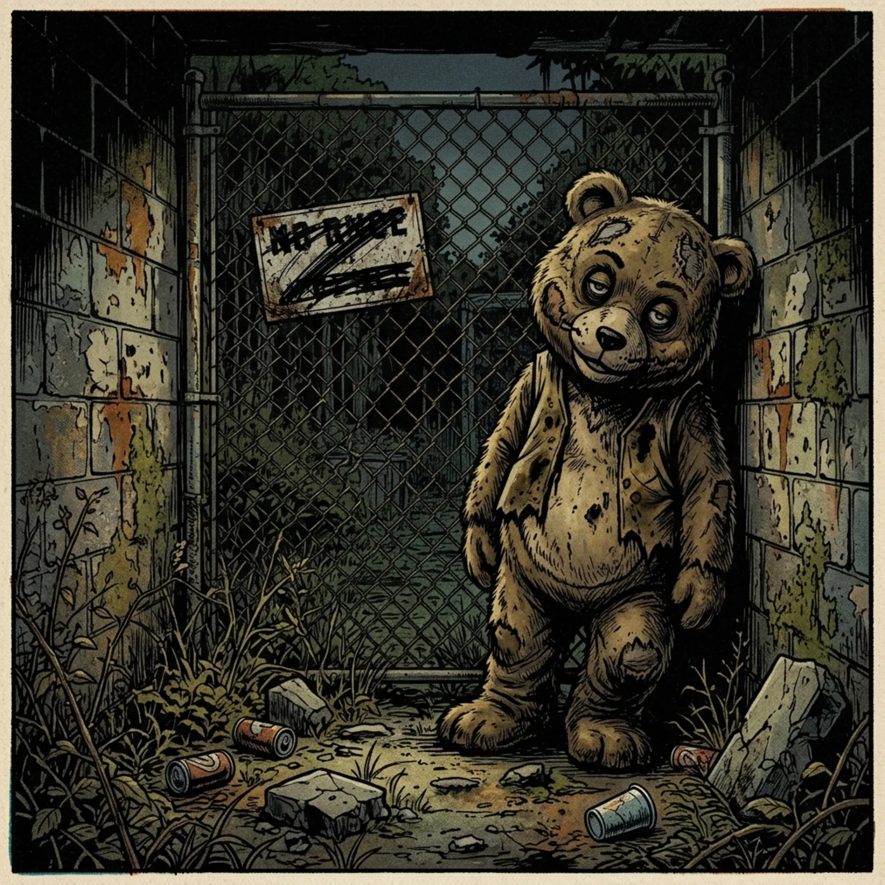
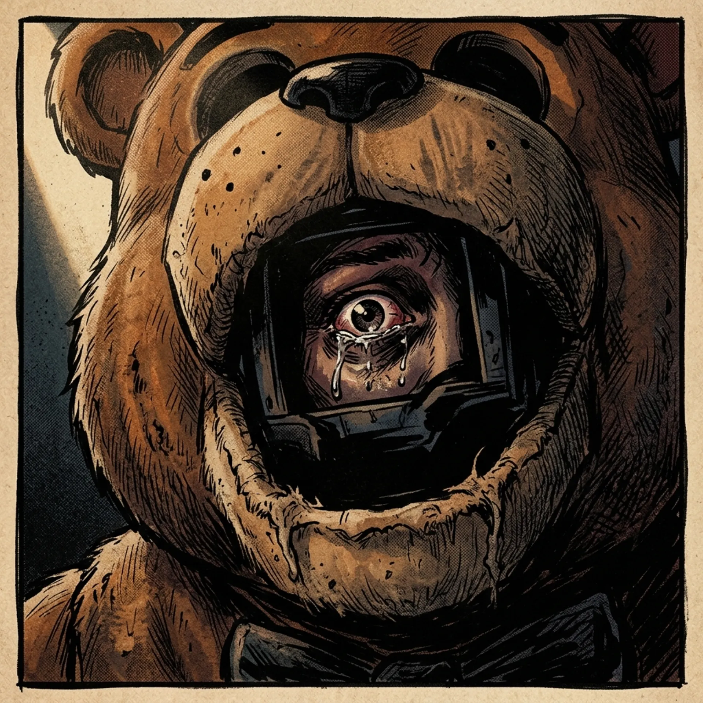

Кормление
Выдача сухого корма и мутной воды осуществляется строго в пластиковые миски на полу в комнате отдыха.
Этот адрес зарезервирован для персонала. Вернитесь к гостевой странице зоопарка.
Открыть «Лосиный Остров»Взрослые особи с разрушенной психикой и подростки с недовесом. Интеграция в искусственный коллектив и тяжелые ростовые костюмы дают им иллюзию утраченной мягкости. Объект используется партнером «Тындекс Роботикс» для сбора и конвертации энергии страха.


Выдача сухого корма и мутной воды осуществляется строго в пластиковые миски на полу в комнате отдыха.
Инвентарь не имеет права покидать вольер без предоставления Администрации свежей замены.
Не смотреть аниматорам в глаза дольше трех минут. Это провоцирует воспоминания о прежнем статусе.
При запахе страха и гнили отправить объект в Прачечную на режим глубокого замачивания. Снимать шкуры запрещено.
312-АЛЬФА: Аниматор «Собака» покинул территорию и был замечен в парке «Солнышко». Решение: перепрошивка.
МЯГКИЕ ЛАПКИ: Массовая драка в вольере. Повреждено 40% синтепона. Решение: электрошоковая терапия.
СЛЕЗЫ: Гости жалуются, что животные под масками плачут. Директива: усилить газлайтинг на входе.